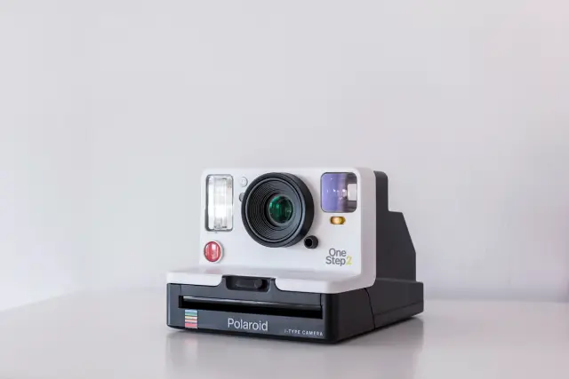
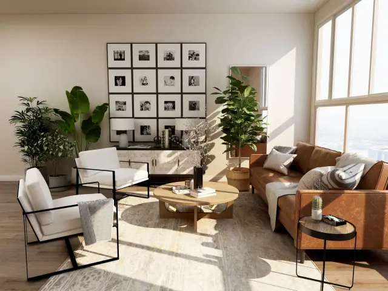

Mixtape: Ledger
Ninety-nine bars, zero features.
Rapper · Portfolio
Multisyllabic pockets, breath control, and punchlines with receipts.
About
Multisyllabic pockets, breath control, and punchlines with receipts.
Everything on this page is made to be scrolled slowly. The work below is the honest list — outcomes attached, fluff removed.
Currently
Focus — Flow switching
Also — Lyricism
Based — Tallinn
Selected work

Ninety-nine bars, zero features.
Two years unbeaten at the city circuit.

A joint EP with the city's best producer.
A five-track narrative about one intersection.
A scripted acapella set for festival crowds.
Writing sessions streamed, unedited.
Services
Multisyllabic pockets, breath control, and punchlines with receipts. Flow switching is where this shows up most — ask for examples on a call.
Multisyllabic pockets, breath control, and punchlines with receipts. Lyricism is where this shows up most — ask for examples on a call.
Multisyllabic pockets, breath control, and punchlines with receipts. Freestyle is where this shows up most — ask for examples on a call.
Multisyllabic pockets, breath control, and punchlines with receipts. Beat selection is where this shows up most — ask for examples on a call.
Multisyllabic pockets, breath control, and punchlines with receipts. Live cypher is where this shows up most — ask for examples on a call.
Multisyllabic pockets, breath control, and punchlines with receipts. Mixing vocals is where this shows up most — ask for examples on a call.
Contact
Tallinn · replies within a day